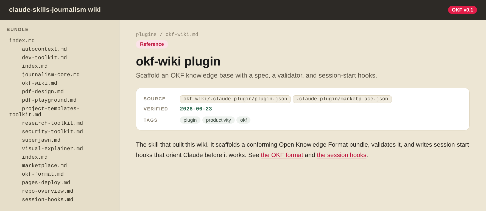

What is OKF?
Open Knowledge Format stores knowledge as a tree of small markdown files: one concept per file,
each with YAML frontmatter that records what it is, where the fact came from, and when it was last
checked. Directory index.md files
provide navigation, and a validator enforces the contract. It is built for knowledge bases that both
people and agents read and edit, where a clean-looking page is not enough: you need to recover the
intent and provenance behind each fact.
How it works
You run the scaffolder once. After that, the generated project carries hooks that orient Claude on the bundle at the start of every session, and a validator that keeps the tree honest in CI.
1 · Scaffold once
A project that validates itself: bundle/, the
.claude/ session hooks, the spec, and the validator.
2 · Every Claude session in that project
okf-anchor.py prints the bundle index into Claude's context, so work starts from the map, not from memory.
okf-orient.py blocks the first action once, until Claude confirms it read the index, then unblocks for the rest of the session.
validate.py checks schema, dates, links, and secrets, and exits non-zero so a broken or stale concept never merges.
When to use
- Starting an institutional-memory atlas for a newsroom or team
- Structuring docs as one-concept-per-file with provenance, not long prose pages
- Building a research atlas, decision log, or infrastructure map an agent will read
- Initializing OKF in a repo, optionally publishing into its GitHub wiki
What's included
Scaffolder
scaffold.py writes a project that passes its own validator by construction: spec, README, validator, and a starter bundle with a fully filled-in example concept.
Validator
validate.py checks frontmatter schema, ISO dates, list shapes, internal link resolution, and a secret-value scan. Exits non-zero on any failure, so it drops into CI.
Session hooks
A .claude/ with two hooks: one injects the index at session start, one blocks the first action until Claude has read it. Cross-platform, one launch command per OS.
The spec
A short, generic OKF spec (v1): the file layout, the frontmatter contract, the type vocabulary, reserved filenames, and how independent bundles federate into one.
Wiki bootstrap
gh-wiki-bootstrap.py creates the first page of an empty GitHub wiki (which has no git repo or API until then) so you can clone and push the rest.
The frontmatter contract
Every concept file carries these keys. The validator fails the build if any are missing, mistyped, or shaped wrong.
| Key | What it holds |
|---|---|
| type | One of: Machine, Network, Service, Session, Project, Repo, Credential, Path, Process (infrastructure); Concept, Decision, Event, Person, Org, Source (domain-neutral); or Reference (catch-all) |
| title | Human-readable name of the concept |
| description | One-line summary |
| source | List of provenance pointers (files, issues, URLs). Quote every element; an unquoted # or : breaks YAML. Example: ["README.md", "issue #445"] |
| verified | ISO date the fact was last checked against reality |
| timestamp | ISO date the concept was authored or updated |
| tags | List of topic tags for recall |
Installation
# recommended: install the okf-wiki plugin
/plugin marketplace add jamditis/claude-skills-journalism
/plugin install okf-wiki@claude-skills-journalism
# or copy just this skill
git clone https://github.com/jamditis/claude-skills-journalism.git
cp -r claude-skills-journalism/okf-wiki ~/.claude/skills/
Or browse this skill in the GitHub repository.
Quickstart
# run from where you installed the skill (see Installation below); adjust the path if it lives elsewhere
python3 ~/.claude/skills/okf-wiki/scripts/scaffold.py ./my-knowledge-base \
--title "Team knowledge base" \
--sections concepts,services,decisions
# the scaffolder validates at the end; re-run any time from the project root
python3 scripts/validate.py --bundle bundle
The scaffolder keeps the spec and README at the project root and only validates the
bundle/ tree, so the docs never trip the
concept checks.
What it creates
The command above writes a project that passes its own validator. The spec, README, and
validator sit at the root; only bundle/
holds concepts.
my-knowledge-base/
SPEC.md # the OKF spec
README.md # how the bundle is laid out
scripts/validate.py # the validator, copied in
bundle/ # the only validated tree
index.md # carries okf_version: "0.2"
concepts/
index.md
example-concept.md # a filled-in starter concept
services/ # one folder per --sections name, same two files
decisions/
Each example-concept.md is filled in, not a stub. The two dates default to the day you scaffold:
---
type: Reference
title: Example concept
description: A starter concept showing the OKF frontmatter contract.
source: ["SPEC.md", "scaffold.py"]
verified: 2026-06-23
timestamp: 2026-06-23
tags: [example, starter]
---
# Example concept
Validation runs at the end of scaffolding, and any time after:
$ python3 scripts/validate.py --bundle bundle
Markdown files: 7 | concepts: 3
PASS: bundle conforms to OKF spec v1 (schema, dates, lists, links, secret scan).
# on a broken concept it exits non-zero:
FAIL: 1 problem(s):
- decisions/example-concept.md: missing/empty required frontmatter key 'tags'
In one pass the validator checks:
- the required frontmatter keys and the supported
typevocabulary - ISO dates, and list-shaped
sourceandtags - reserved
index.mdandlog.mdfiles - relative links that resolve inside the bundle
- a secret-value scan that fails the build on a leaked token
Because it exits non-zero on any failure, it drops into CI:
# .github/workflows/okf.yml
- name: validate OKF bundle
run: python3 scripts/validate.py --bundle bundle
See it in action
okf-wiki bootstrapped a wiki of this very repository, committed alongside the skill and validated on every change. Below is one concept as a reading surface: the file tree on the left, and the concept's provenance (source, when it was verified, tags) surfaced above the body.

Browse the full example, 16 concepts across two sections, on GitHub. It is a plain scaffold, run on this repo and filled in with real concepts.
Session hooks
A scaffolded project includes a .claude/ directory
with two hooks, so any Claude session opened in that project starts from the bundle instead of from
memory:
okf-anchor.py · SessionStart
Prints the bundle's root index so it lands in the session context. Work begins from the map of the knowledge base, not a guess about it.
okf-orient.py · PreToolUse
Blocks the first action of the session once, until Claude confirms it read the index, then unblocks for the rest of the session. It is wired with no matcher, so it catches the first tool call of any kind, and it is inert outside an OKF bundle.
One script, a different launch command per OS
Both hooks are a single cross-platform python3 script. The scripts are identical on every platform;
only the interpreter named in .claude/settings.json
changes. scaffold.py auto-detects your OS, and
--hooks-os posix|windows overrides it.
| Operating system | Hook entry in settings.json |
|---|---|
| macOS, Linux | "command": "python3", "args": ["${CLAUDE_PROJECT_DIR}/.claude/hooks/okf-anchor.py"] |
| Windows | "command": "python", "args": ["${CLAUDE_PROJECT_DIR}/.claude/hooks/okf-anchor.py"] |
First-open approval. Claude Code treats a checked-in
.claude/settings.json as untrusted, so the
first time you open the project it asks you to approve the hooks. They run automatically after that.
Turning them off. Pass --no-hooks
when scaffolding to skip them, or delete .claude/
(or set disableAllHooks) in an existing project.
Key principles
No secret values
A credential concept documents the key name and retrieval path, never the value. The validator's secret scan fails the build on a leaked token.
Provenance on every fact
Each concept records its source and the date it was verified, so a reader can tell a checked fact from a stale guess.
One concept per file
Small files with relative links keep diffs readable and let an agent load just the concept it needs.
Validate in CI
The validator exits non-zero on any failure, so a broken concept or a leaked secret never merges.
Optional: publish into a GitHub wiki
OKF lives best as in-repo files, where the validator and relative links work directly. A repo's
GitHub wiki is an optional reading surface. A wiki with zero pages has no git repo to push to and
no API, so the first page must be created through the web UI:
gh-wiki-bootstrap.py does that using
a saved GitHub web session you supply.
python3 ~/.claude/skills/okf-wiki/scripts/gh-wiki-bootstrap.py owner/repo \
--state path/to/gh_state.json
# then clone https://github.com/owner/repo.wiki.git and push the rest
Treat the wiki as a published view, not the source of truth. GitHub wikis are flatter than an OKF tree and use their own link syntax, so nested directories and relative links need adapting. v0.1 ships the bootstrap step; an automatic bundle-to-wiki sync is not built yet.
Related skills
Start from the source
A scaffold, a spec, and a validator for knowledge bases that people and agents share.
View on GitHub